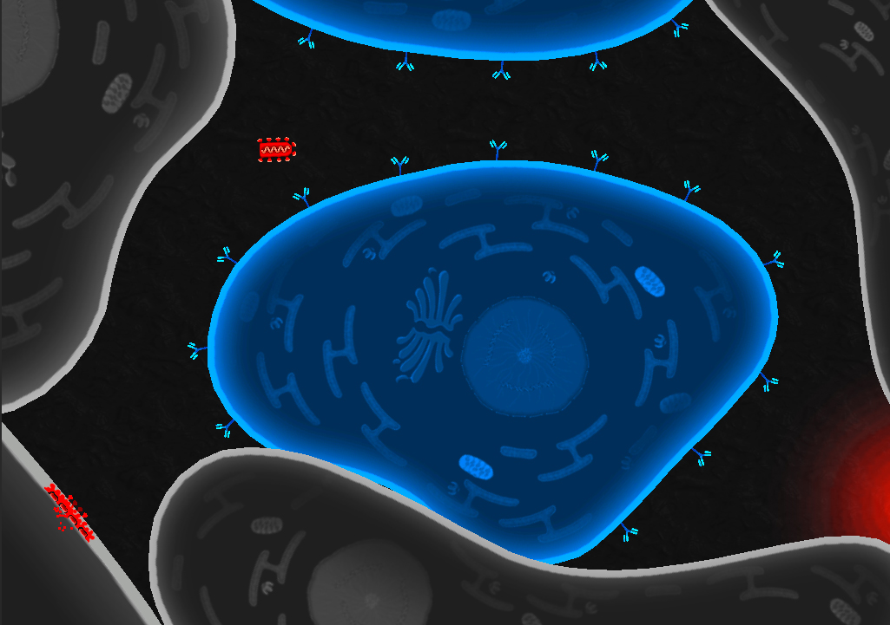
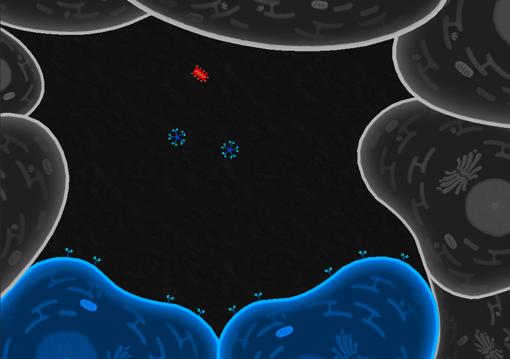
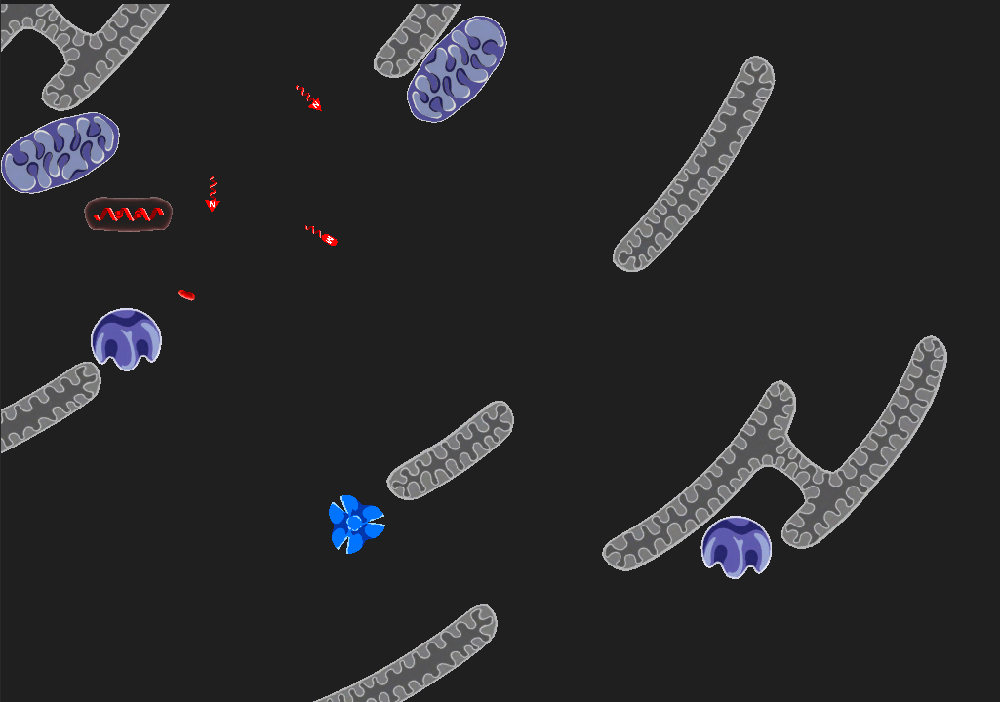
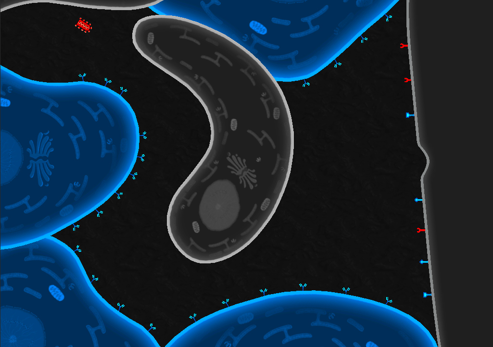

Project notes
Virulent
An educational iOS game project that blended science communication, grant work, team leadership, and game production into one early-career chapter.
gameseducationleadershipunity
Project notes
An educational iOS game project that blended science communication, grant work, team leadership, and game production into one early-career chapter.

What happened
After graduating, I took a post-doctoral research position at the Morgridge Institute for Research. Part of that work involved helping an education research group build games based on science from other institute labs.
I worked with a small founding group from UW-Madison to write grants, prototype game concepts, run education outreach, and hire artists, developers, and designers. By the time I left, the group had grown from four people to more than twenty-five.
During that stretch I led the development of the group's first publicly released game, Virulent. I moved between stakeholder, Scrum Master, and developer responsibilities as needed, which meant translating among scientists, education experts, artists, programmers, and play-testers while still keeping the project moving.
The end result was a free educational game that reached more than 20,000 downloads. It did not satisfy every constituency perfectly, but it shipped, it found an audience, and it taught me a lot about collaborative product development.
Why it mattered
Media


